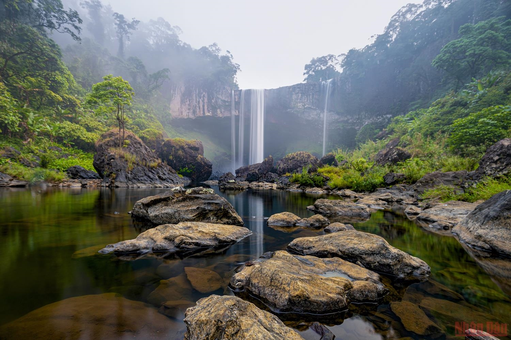
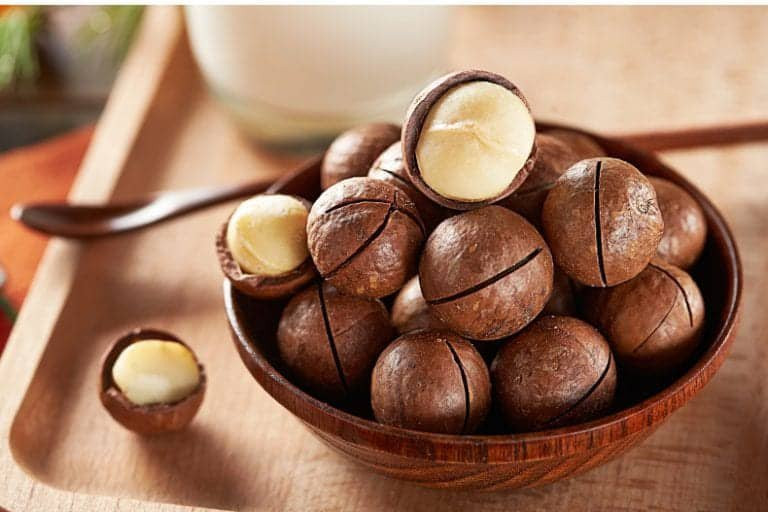

Tây Nguyên
và những điều bạn chưa biết.
Tây Nguyên hay vùng cao nguyên Nam Trung Bộ là khu vực với địa hình cao nguyên bao gồm các tỉnh xếp theo thứ tự vị trí địa lý từ phía Bắc xuống Nam gồm Kon Tum, Gia Lai, Đắk Lắk, Đắk Nông và Lâm Đồng. Tây Nguyên là vùng thuộc miền Trung Việt Nam.
Nhưng khi nhắc về tây nguyên, mọi người thường nghĩ Tây Nguyên chỉ là nơi trồng những loài cây công nông nghiệp lâu năm như cà phê, cây keo, cây tiêu,... Nhưng ngoài ra, Tây nguyên lại là nơi du lịch thiên nhiên cực kì phát triển.Bao gồm các khu du lịch sinh thái tự nhiên như Hồ Lắk – Đắk Lắk, Suối Ong, Biển Hồ , Núi lửa Chư Đăng Ya và đặc biệt chính là thác Hang Én nổi tiếng tại GiaLai.


Không chỉ về phong cảnh, khi đến Tây Nguyên mọi người còn được trãi nghiệm cuộc sống cũng như phong tục tập quán của người dân tộc thiểu số, những buổi biểu diễn văn nghệ đắc sắc, múa khiên ( dân tộc Bana) , mừng lúa mới ( dân tộc Tày ), và đặc biệt nhất là được trải nghiệm những món ăn đặc sản nơi này.
Ngoài ra Tây Nguyên còn có những đặc sản Tây Nguyên hùng vĩ với núi rừng bạt ngàn không chỉ có nhiều cảnh quan tuyệt đẹp như Núi LangBiang, thác Đray Nur, Hồ Ea Snô, hồ Lăk,... mà còn có nhiều đặc sản hấp dẫn đang chờ du khách khám phá. Gồm Những món ăn đậm nét văn hoa của người dân tộc BaNa như là gà nướng cơm lam, hay các loại hạt như hạt Macca, hạt điều,...

